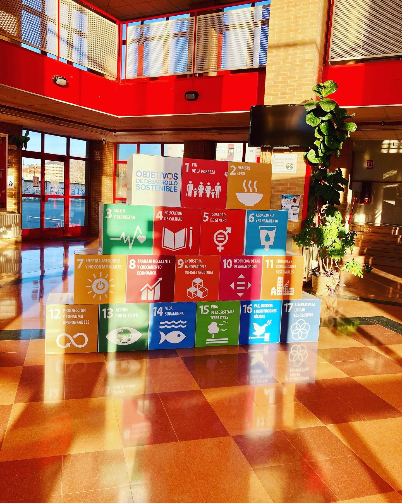
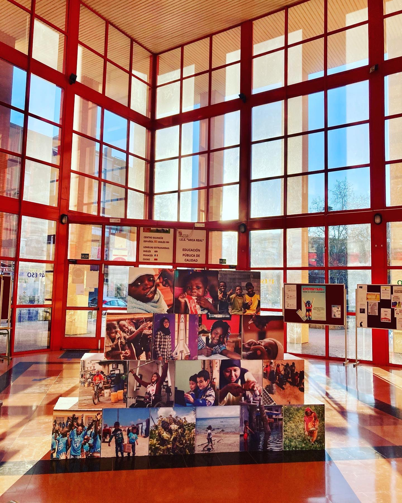
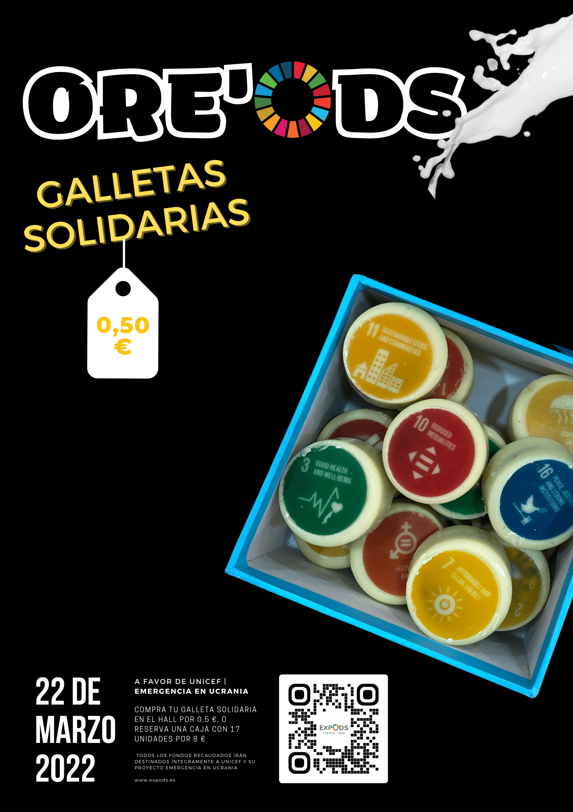
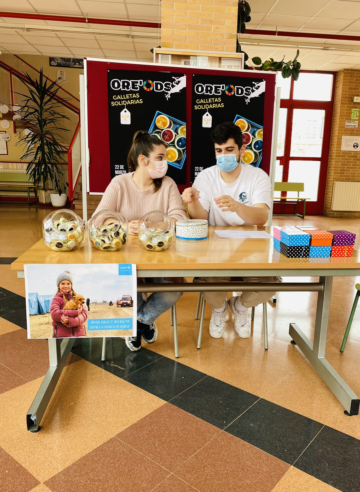
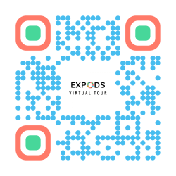

Como ya expliqué en un post anterior, este curso nuestro centro creó un nuevo espacio, el aula de emprendimiento, para formar y desarrollar las competencias emprendedoras de nuestro alumnado.
El pasado enero, como parte de las actividades de emprendimiento, acogimos en el centro una exposición sobre los Objetivos de Desarrollo Sostenible, para promover el pensamiento ético y sostenible en nuestra comunidad (EntreComp). Esta exposición itinerante la cedió Unicef, con el fin de concienciar sobre los ODS.


Reté a mi alumnado de primer curso, como actividad de emprendimiento social, a pensar formas de recaudar fondos para Unicef y agradecerles la cesión. Trabajaron en grupos y propusieron varias líneas de acción (creatividad, detectar oportunidades), y juntos valoramos esas ideas para decidir cuáles eran más viables. Y entonces el reto fue lanzarse a ponerlas en práctica (tomar la iniciativa).
Una de las ideas fue convertir la exposición física en una exposición virtual que pudiera visitarse desde cualquier parte del mundo, y añadir enlaces para apoyar a Unicef. Pedí a otra profesora de mi departamento que participara en el proyecto —que era enorme— y que creara, junto a su alumnado, una landing page con WordPress para nuestra exposición virtual, ya que su alumnado tiene que organizar eventos y esto podía trabajarse como parte de su currículo (movilizar a otras personas). Esta es la landing page que crearon.
Al mismo tiempo, mi alumnado usó sus móviles, Google Street View y ThingLink para transformar la expo física en una virtual. Llegué a pedir una cámara de 360º como regalo de Navidad, pero creo que a los Reyes les pareció demasiado cara, así que tuvimos que conformarnos con el móvil y Google Street View para la foto de 360º (movilizar recursos). Por suerte mi alumnado tiene mucho talento y consiguió una foto de 360º bastante decente que pudimos usar, porque yo lo intenté varias veces y no logré sacar una en condiciones. Puedes visitar la expo virtual aquí.
Al principio habíamos pensado quedarnos ahí, pero teníamos un escáner 3D nuevo que necesitábamos aprender a usar, y ThingLink acababa de añadir una nueva función de modelos 3D que me moría por probar. Conseguí que un compañero nos enseñara a usar el escáner 3D (movilizar a otras personas). Me llevó casi un mes aprender a manejarlo y poder escanear los cubos de los ODS —que al parecer son de las cosas más difíciles de escanear, porque el escáner prefiere las irregularidades—, pero al final lo logré, y enseñé también a algunos alumnos a usarlo, hasta que escaneamos los 17 cubos de los ODS (aprender a través de la experiencia, motivación y perseverancia). No es perfecto, ya que los modelos 3D tardan unos 15 segundos en cargar (son archivos grandes), pero funciona.
Además teníamos un proyecto eTwinning, SustainABLE, en el que llevábamos trabajando desde principio de curso junto a otros tres centros: dos de España y uno de Portugal. Así que pensamos: ¿por qué no hacerles partícipes también de este proyecto? Habíamos estado diseñando infografías sobre distintos ODS para concienciar en nuestros centros, así que decidimos colocar esas infografías en la expo virtual y añadir más vídeos, información, etc. Usamos distintas herramientas como Canva, Genially…
La expo que habíamos acogido estaba en español, pero queríamos que fuera más internacional, así que decidimos usar un plugin para traducir la landing page de nuestra exposición virtual y añadir más información en inglés, de modo que cualquier persona de cualquier parte del mundo la encontrara interesante. Después sumamos también a nuestra profesora de inglés al proyecto, para crear algunos juegos con Genially que se añadieron a la expo virtual (movilizar a otras personas, trabajar con otros). Siguen trabajando en ello.
Pero entonces, ¡ay, entonces! Después de tanto trabajo, cuando estábamos listos para publicar nuestra exposición virtual… nos enteramos de que hay que pagar para usar esta función de modelos 3D de ThingLink si quieres que otras personas la vean. Una cantidad de dinero que no podíamos permitirnos (cultura financiera y económica, lidiar con el riesgo y la incertidumbre). Y, a menos que pagáramos, no podríamos publicar la expo virtual ni dejar que personas ajenas a nuestro centro vieran los cubos 3D. Entonces hablé con ThingLink sobre nuestro proyecto y, por suerte, conseguí sumarles también (movilizar recursos), porque nos permitieron usar la función gratis para este proyecto educativo. ¡Les estoy muy agradecida!
Después empezó la guerra en Ucrania y decidimos colocar muchos botones por toda la exposición virtual pidiendo a la gente que donara a través de Unicef. También organizamos un mercadillo solidario de repostería. El propio alumnado diseñó el logo, los carteles y las promos para redes sociales, e incluso bautizó las galletas como OREO'ODS, ¡algo que me parece brillante! Yo solo les enseñé a hacer las galletas (mini Oreos bañadas en chocolate) y aporté los ingredientes y los moldes. Han hecho ya unas 1.000 galletas. Puedes pedir las galletas desde la web de la expo virtual (no enviamos fuera, ¡lo sentimos! Las galletas hay que recogerlas en el centro).


En resumen, con este proyecto de emprendimiento social nuestro alumnado (¡y yo misma!) hemos desarrollado las competencias emprendedoras, el pensamiento ético y sostenible y la competencia digital. Al mismo tiempo, estamos recaudando fondos para Ucrania a través de Unicef y su campaña de Emergencia en Ucrania. Y hemos concienciado sobre los ODS en nuestro centro y en nuestra sociedad. Esperamos llegar a millones de personas, para inspirarlas a iniciar un cambio en sus vidas, porque el primer paso para alcanzar los ODS es conocerlos.
Para ir a la landing page de la exposición, haz clic aquí, o escanea este código QR. Para ir directamente a la exposición virtual, haz clic aquí. Recuerda que si tienes gafas de RA puedes usarlas para una experiencia inmersiva.
